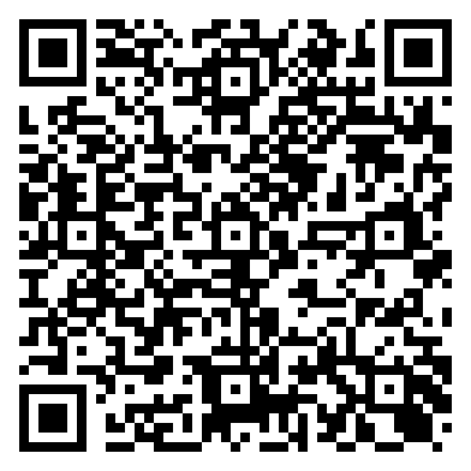
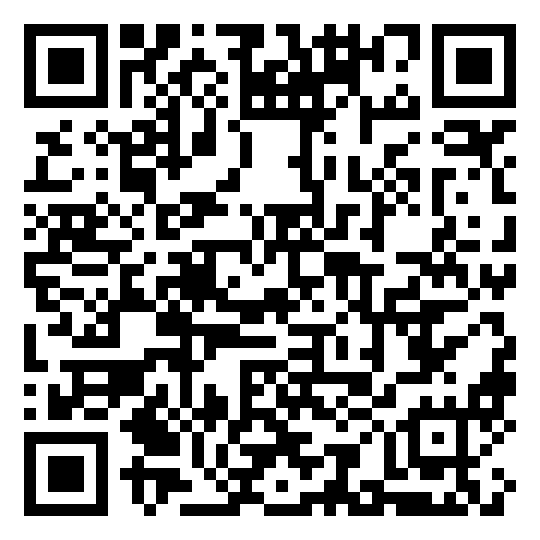

Dos trabajos:
El flyer no es la página del cliente. El flyer vende. La plantilla es lo que el estudiante publica.
Demo (abrilo en el celular, sin cuenta): https://ai-whisperers.github.io/paragu-ai-cv/
Copy fijo (se puede acortar; no se cambia precio ni qué incluye):
| Campo | Texto |
|---|---|
| Headline | Tu CV, en un link. El reclutador te escribe por WhatsApp. |
| Sub | Página web + PDF + tarjeta con QR. Para estudiantes que buscan pasantía o primer laburo. |
| Precio | Gs. 200.000 · pago único |
| Letra chica | Incluye 12 meses de hosting. Sin cuota mensual. |
| CTA | Escaneá y escribí. Mandá tu CV en PDF y en pocos días tenés la página. |
| Contacto | Kyrian Weiss · 0985 724 135 (+595 985 724135) |
| Marca | AI Whisperers / paragu-ai CV (no “Erebus”) |
Viñetas (máx. 4):
Qué tienen que mandar (en el flyer, corto):
Si la foto del PDF no se ve, se la pedimos por el chat. Nombre y carrera salen del PDF.
| QR | Destino | Etiqueta |
|---|---|---|
| 1 | Escribime | |
| 2 | CV demo de Ana Paula Samaniego | Mirá un ejemplo |


URL del QR 1:
https://wa.me/595985724135?text=Hola%2C%20quiero%20un%20CV%20web
URL del QR 2: https://ai-whisperers.github.io/paragu-ai-cv/
No pongas alias ni banco en el papel. No pongas Gs. 100.000. No pongas “Erebus”.
Formatos: A4 (o A5) vertical — carteleras · 1080 × 1350 — feed Instagram · QRs ≥ ~3 cm de lado en papel.
Estilo: limpio, se lee a 1,5 m. AI como herramienta, no robot caricaturesco.
Entregá el arte por WhatsApp o Drive, como te quede mejor.
La plantilla es barra + WhatsApp + el PDF a la vista. Demo ya online arriba.
Tiene que quedar (no sacar):
wa.me del estudiante)Podés cambiar: barra de arriba, colores, tipo, cómo se ve el botón. El CV en sí no se rediseña en v1: se muestra el PDF que mandaron.
No hace falta: transcribir el CV a secciones, menú, login, listado de alumnos.
La tarjeta: 90×50 mm, nombre + rol + QR del link de esa persona.
Plazo que mencionaste para el flyer: ~2 días una vez cerrado este brief.